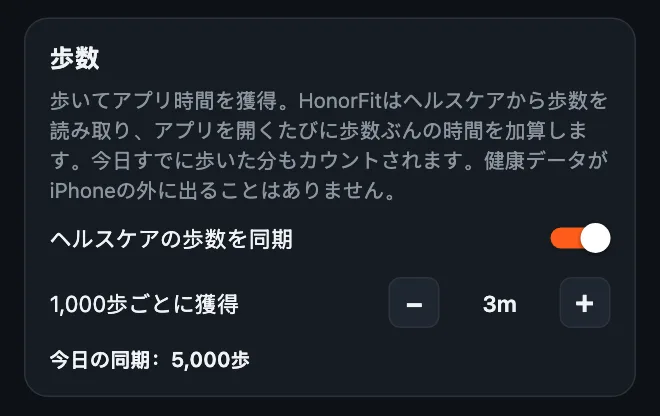
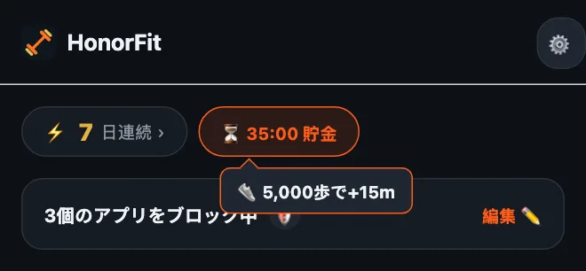

歩数でスクリーンタイムを稼げるようになりました
どうも！HonorFitの最新機能について、手短に紹介させてください。きっかけは、ユーザーさんからもらった1通のメールです。HonorFitは、腕立て伏せ（スクワットでもケーゲル体操でも、好きな運動でOK）をして、自己申告でスクリーンタイムを稼ぐアプリブロッカーです。カメラは使いません。
そのユーザーさんにこう聞かれました。「スマホはもう歩数を数えてるのに、なんでそれで時間を稼げないの？」いい質問です。というわけで、稼げるようにしました。HonorFitは、iPhoneならヘルスケア（Apple Health）、Androidならヘルスコネクトから歩数を読み取って、自動でアプリ時間に変えてくれます。
オンにする方法
- HonorFitを1.18.0以降にアップデートします。
- ホーム画面の歯車をタップして、歩数カードを探します。
- ヘルスケアの歩数を同期（iPhone）またはヘルスコネクトの歩数を同期（Android）をオンにします。
- スマホに聞かれたら歩数を許可します。HonorFitがお願いするのは歩数の読み取りだけで、ほかには何もありません。
これで完了です。今日すでに歩いた分もすぐにカウントされて、スイッチの下に「今日の同期」と歩数が表示されます。

Androidの場合はヘルスコネクトが必要です。Android 14からは最初から入っています。それより古いスマホでは、HonorFitがGoogle Playに案内するので、そこから入手してください。それから、Google Fit、Samsung Health、Fitbitのように、ヘルスコネクトに歩数を記録してくれるアプリも必要です。スマホがどこかで歩数を数えていても、それを共有しているとは限らないんです。
歩数でどれくらいの時間が稼げる？
初期設定では1,000歩ごとに3分を獲得します。この値はスイッチのすぐ下で変えられて、1秒未満から好きなだけ大きな値まで設定できます。
| 歩数 | 1,000歩で3分（初期設定） | 1,000歩で5分 |
|---|---|---|
| 2,000歩（20分くらいの散歩） | 6分 | 10分 |
| 5,000歩 | 15分 | 25分 |
| 10,000歩 | 30分 | 50分 |
僕ならこう決めます。のんびり歩くと、だいたい1分に100歩くらいです。時間制のウォーキングを初期設定の「1分ごとに30秒」で使っているなら、1,000歩で5分くらいにしておくと、歩数で稼ぐ時間と、ウォーキングを記録して稼ぐ時間がだいたい同じになります。もともとよく歩く人（犬の散歩、通勤、立ち仕事など）は低めにしておきましょう。そうしないと、毎日タダでアプリのロックが解除されてしまいます。
歩数はいつ反映される？
HonorFitを開くたびです。ブロック中のアプリの時間がなくなって、ロック画面からHonorFitを開いたときも含みます。その日の合計歩数を読み取り、前回から増えた分を貯金して、ホーム画面に「👟 5,000歩で+15m」のように小さく表示します。

なので、散歩に行ってからHonorFitを開けば、時間が貯まっています。同じ歩数で二重に時間がもらえることはありません。前回の同期が昨日だった場合は、昨日の遅い時間に歩いた分を、まず昨日の分として加算します。「深夜0時にリセット」をオンにしている場合、その遅い時間の歩数は昨日の履歴には残りますが、今日の時間には加算されません。昨日の残高はすでにリセットされているためです。
HonorFitはバックグラウンドでは歩数を読み取りません。読み取るのはアプリを開いたときだけです。歩数の記録は、履歴の中にある専用の歩数ビューで見られます。
無料なの？
はい、歩数の同期は無料で、歩数に上限もありません。関係してくる無料版の制限は、いつものひとつだけです。無料版で貯金できるアプリ時間は最大2時間まで。貯金がいっぱいのときは、それを超えた分は繰り越されません。Pro（米国では月額3ドルまたは買い切り19.99ドル）なら、無制限に貯金できます。
細かいことをあと2つ。ハードモードと体調不良モードで変わるのは回数の価値だけで、歩数は変わりません。それから、歩数は連続記録のためのワークアウトにはカウントされません。連続記録を伸ばしたいなら、回数をこなしましょう。
自己申告制について、ひとつだけ：時間制のウォーキングを記録して、歩数も同期すると、同じ散歩で二重に時間をもらうことになります。誰にも止められませんが、どちらか一方にしてください。僕のおすすめは、普段歩き回る分は歩数に任せて、ちゃんとしたワークアウトだけをワークアウトとして記録することです。
歩数が0のまま？
- iPhone：iOSは、歩数の読み取りを拒否されたかどうかをアプリに一切教えてくれません。ただ0を返すだけです。ヘルスケアアプリを開いてプロフィール写真をタップし、App → HonorFitと進んで歩数をオンにしてください。
- Android：ヘルスコネクトを開いて（歩数が見つからないときは、HonorFitの歩数カードにヘルスコネクトを開くボタンが表示されます）、HonorFitが歩数を読み取れるようになっているか確認してください。次に、Google Fit、Samsung Health、Fitbitなどの歩数アプリが、ヘルスコネクトに歩数を書き込んでいるか確認してください。
- それからHonorFitに戻ってください。設定画面に戻るとすぐに、もう一度確認します。
健康データは大丈夫？
HonorFitが読み取るのはひとつだけ、歩数です。ヘルスケアやヘルスコネクトに何かを書き込むことはありませんし、その数字がスマホの外に出ることもありません。アカウントも、送り先になるサーバーもないんです。詳しくはプライバシーポリシー（英語）に書いています。
こういうアイデアがあれば、サポートページ（英語）から送ってください。僕の受信箱に直接届きます。この機能も、誰かが連絡をくれたからこそ生まれました。
HonorFit Blockerは、iPhoneとAndroid向けの無料アプリブロッカーです。腕立て伏せや好きなエクササイズ、そして歩数でスクリーンタイムを稼げます。自己申告制で、カメラは使わず、データはスマホの外に出ません。